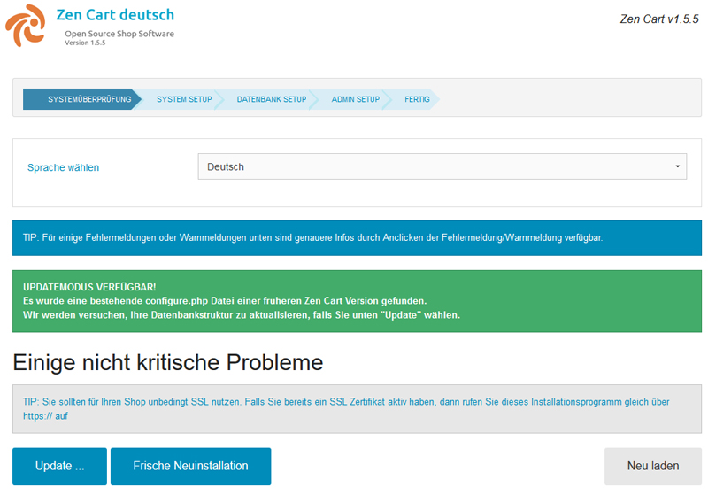
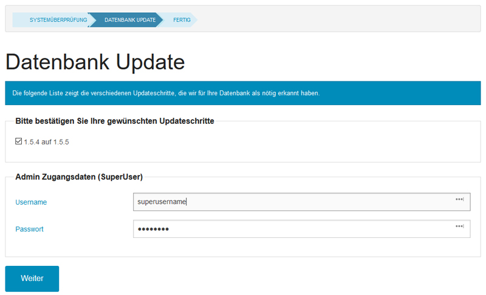
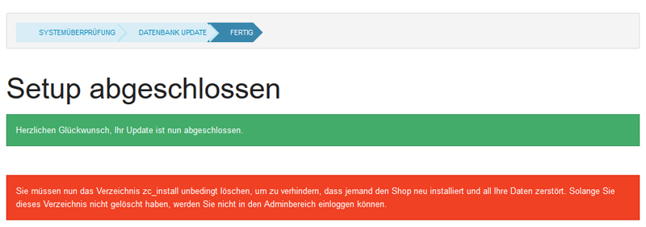

Zen Cart 1.5.5 deutsch - Dokumentation
Willkommen bei der deutschen Zen Cart Version 1.5.5
Die deutsche Zen Cart Version steht Ihnen kostenfrei im Rahmen der GNU General Public License zur Verfügung. Sie können diese Software kostenfrei benutzen, Änderungen vornehmen, etc.
Da wir Ihnen diese Software kostenfrei zur Verfügung stellen, würden wir uns über Spenden freuen. Diese Spenden helfen uns, die Kosten für die Wartung, Upgrades, Updates, den kostenlosen Support und die stetige Weiterentwicklung dieser Software für Ihren Online-Shop zu decken.
Das Team der deutschen Zen Cart Version
Die deutsche Zen Cart Version 1.5.5 ist eine Modifikation der amerikanischen Zen Cart Version 1.5.5a von zen-cart.com.
Zen Cart ist abgeleitet von: Copyright 2003 osCommerce
Dieses Programm wird in der Hoffnung vertrieben, dass es nützlich ist, allerdings OHNE IRGENDWELCHE GARANTIEN; ohne die Garantie der MARKTGÄNGIGKEIT oder der EIGNUNG ZU EINEM BESTIMMTEN ZWECK und wird vertrieben unter der GNU General Public License
Hauptunterschiede zwischen der deutschen und amerikanischen Version:
- Die amerikanische Version ist im Administrationsbereich immer monolingual englisch. Daran ändert auch die etwaige Installation eines deutschen Sprachpakets nichts. Die meisten Konfigurationseinstellungen werden immer auf englisch sein, da sie in der Datenbank hinterlegt sind. Die deutsche Zen Cart Version bietet einen multilingualen Adminbereich. Dadurch sind auch die in der Datenbank hinterlegten Konfigurationseinstellungen und -beschreibungen auf deutsch. Sie könnten auch in jeder anderen Sprache genutzt werden. Diese Funktionalität steht natürlich auch für später installierte Erweiterungen zur Verfügung. Die im Downloadbereich von zen-cart-pro.at angebotenen Module berücksichtigen diese Multilanguagefähigkeit und sind alle für die deutsche Zen Cart Version ausgelegt.
- Die amerikanische Zen Cart Version berücksichtigt viele rechtliche Erfordernisse nicht, denen ein Onlineshop im deutschsprachigen Raum unterworfen ist. Daher wurde die deutsche Zen Cart Version auf die Anforderungen, die an Onlineshops in Deutschland, Österreich und der Schweiz gestellt werden, angepasst. Die Anforderungen der sogenannten "Buttonlösung" werden erfüllt.
- Die Installation ist schlanker und enthält keine unnötigen Dateien mehr, da die Bilder und Medien der Demodaten nicht mehr automatisch mitinstalliert werden, sondern nur bei Bedarf hochgeladen werden können
- Die amerikanische Version enthält keinerlei HTML Editor mehr, in der deutschen Version ist der CKEditor bereits integriert und löst das veraltete HTML Area ab. Alternativ ist auch der Tiny MCE Editor integriert.
- Weitere Bugfixes und Verbesserungen, die von den Amerikanern nicht übernommen wurden
- Zahlreiche häufig genutze Erweiterungen sind in der deutschen Zen Cart Version bereits vorinstalliert. Weitere für die deutsche Zen Cart Version angepasste Erweiterungen stehen in unserem Downloadbereich zur Verfügung.

Diese Software ist OSI certified Open Source Software.
OSI certified ist ein Zertifikat der Open Source Initiative.
SYSTEMVORAUSSETZUNGEN
Minimale Anforderungen:
- PHP 5.3.7 oder höher, Apache 2.0 oder höher und MySQL 5.1 oder höher
- Apache muss konfiguriert sein mit AllowOverride auf entweder 'All' oder mit zumindestens 'Limit' und 'Indexes' Parameter, vorzugsweise mit ebenfalls 'Options' Parameter.
- PHP muss CURL mit OpenSSL unterstützen (erforderlich z.B. für PayPal Express)
Empfohlene Serverkonfiguration:
- PHP 5.6 oder höher
- Apache 2.2.x oder 2.4.x
- MySQL 5.1 bis 5.7
- und die oben erwähnten Apache/PHP Settings
PHP 7 wird mit dieser Version vollständig unterstützt!
Bevor Sie Zen Cart mit PHP 7 einsetzen, prüfen Sie aber ob Zusatzmodule, die Sie verwenden, ebenfalls bereits für PHP 7 angepasst wurden.
Zen Cart 1.5.5 deutsch funktioniert zwar auch auf einem Windows/IIS server, wir raten aber dringend zu einem Linux/Apache Server.
Neue Funktionen gegenüber 1.5.4
Zen Cart 1.5.5 deutsch ermöglicht den Einsatz von Zen Cart unter PHP 7 und bringt neben zahlreichen Bugfixes viele neue Funktionalitäten mit, unter anderem:- Unterstützung von PHP 7
- Verbesserte Unterstützung von MySQL 5.7
- Neues responsives HTML 5 Standardtemplate (responsive_classic)
- vereinfachte Installation
- Passwörter der Kunden via Admin änderbar
- Übersichtlichere Menüs in der Administration / Admin auf Tablets leichter bedienbar
- CSS Buttons in der Administration (optional)
- Erweiterte Google Analytics Funktionen (Opt-Out-Cookie integriert)
- Erweiterte Facebook Open Graph und schema.org Mikrodaten Unterstützung
- Erweiterter Lagerbestandsbericht
- Detaillierteres Errorlogging (myDebug Backtrace integriert)
- Zentrales Styling für die verschiedenen HTML Email Templates
- HTML Email Templates für responsive Darstellung verbessert
- Unterstützung der neuesten Paypal Checkout Funktionalitäten (API NVP 124.0)
- Tiny MCE und CKEditor in den neuesten Versionen
- Mobile Detect in neuester Version, bei Bestellungen im Admin ist ersichtlich, ob die Bestellung per Desktop, Smartphone oder Tablet getätigt wurde
- Details der Bestellung erscheinen auf der checkout success Seite
- Automatisches Update der Wechselkurse für Währungen via cron
- Zen Colorbox ur Vergrößerung der Artikelbilder integriert
- Zahlungsart Bar bei Abholung integriert
- Mehrsprachige Ländernamen integriert
- MailBeez integriert
- IT Recht Kanzlei Schnittstelle zur automatischen Aktualisierung der Rechtstexte integriert
- pdf Rechnung integriert
- Bei Bestellungen können die Adressdaten korrigiert werden
Folgende Neuerungen und Bugfixes wurden aus der amerikanischen 1.5.5a Version übernommen:
- All known v1.5.4 bugfixes and security fixes are included in v1.5.5, including tighter control around XSS as well as clickjacking
- Template: The default out-of-the-box template (called "Responsive Classic") is now a mobile-friendly responsive-design theme built for flexibility with tablets, mobile devices, and desktops.
- Template: The core template_default files have been reviewed for HTML5 compliance, and a number of classes and IDs have been added to move older styling to CSS instead. Specific input-types like email/telephone for easier use on mobiles
- Admin: Admin menu improvements to help it fit tablet screens better
- Admin: Added customer-password reset via Admin
- Admin: Products Price Manager: Added display of taxes into prices
- Admin: Improvements to developers-toolkit and whos-online
- SEO: Numerous updates to canonical-url handling
- SEO: Added hreflang markup for better indexing of multilingual sites, and other HTML page-header metatag improvements
- Checkout: Order Details added to Checkout-Success page
- Payment: PayPal Express Checkout has numerous updated compatibilities added, including their latest InContext mobile support
- Payment: Retired obsolete Linkpoint_API payment module
- Core: Added PHP 7.0 compatibility
- Core: Added MySQL 5.7 compatibility
- Core: Improved error-logging for troubleshooting (included @lat9's debug-backtrace mod)
- Core: Improved/simplified code for db query handling, allowing simple foreach() iterations instead of requiring while(!EOF) loops
- Core: Added hooks to allow for 3rd-party-handling of taxes, for plugin support with orders, attributes, and much more
- Core: Fix some rounding errors
- Core: Added cron code for automated currency-updating, and currency sources can be selected from Admin->Config->My Store menu, and plugins can auto-show in this list
- Core: Fixed bug with a race condition causing database errors related to sessions
- Core: Simplified the configure.php file contents significantly by retaining only the most-often-customized components, and added an automatic-converter as part of zc_install's initial inspection
- Email: Integrated @lat9's "common CSS styling" for HTML emails
- Email: Added newer phpMailer integration (better compatibility with more email services), and email-failure errors are logged to /logs/ for easier debugging if problems occur
- Some language-file cleanups
- Improved compatibility for payment/shipping modules and SSL/TLS to work with the 2016 SHA-256 Secure Server initiatives being embraced by modern hosting companies and PCI Compliance
- Rewrote zc_install - fresh new look, will make future internal maintenance easier
- Replaced phpBB integration with generic hooks to allow for various external forums
- Security patches for alerts provided from various security watchdog sites
- Fix several upgrade-related problems caused by zero-dates in the customers table data/history
- Revamp admin sanitization code to work better with various plugins such as Edit Orders, etc
- Admin orders page had some incorrect CSS classes specified
- Admin customers page had some incorrect HTML tags for span and bold markup
- Admin "Support" link restored to navigation menu
- Admin - fix privilege escalation vulnerability
- Fix missing SEARCH_DEFAULT_TEXT, ERROR_GV_CREATE_ACCOUNT and TEXT_PRICED_BY_ATTRIBUTES language defines
- The zc_install test for availability of SSL and .htaccess could fail due to timeouts when offline
- The zc_install "configure.php file update" was not always handling conversion of old SSL URLs properly
- Fix "uninitialized string offset" error in zen_random_name()
- Fix sort-order of shipping/payment modules when sort-orders are multiple digits
- Responsive Classic: Fix alignment/display of State Dropdown element on address pages
- Fix to inability to choose from address-book during checkout, and fix double "continue" buttons on same page
- Order comments flag was showing incorrectly on PayPal EC transactions
- Restore define for DIR_WS_HTTPS_ADMIN for legacy plugin purposes
- Added several .gitignore files in various folders, to help site developers avoid committing unnecessary files to version control
- For language-specific currency overrides, fix the default
- Fix bindvars to honor string entries that contain 'null'
- add safety to fmod_round
- Fix extra breadcrumb that was appearing when always-open-with-category is enabled
- Update BOC currency parsing to cope with their data changes and division-by-zero errors as a result
- Fix a test-mode bug in Authorizenet AIM module
Changelog
Es gibt gegenüber Zen Cart 1.5.4 deutsch Änderungen in fast allen Dateien, ein detailliertes Changelog würde daher den Rahmen dieser Doku sprengen.
Alle Änderungen sind detailliert auf Github ersichtlich:
https://github.com/zencartpro/zencart-german-grundsystem
NEUINSTALLATION
Einleitung
Dieses Dokument ist eine Basisanleitung für die Installation der deutschen Zen Cart Version. Wenn Sie die deutsche Zen Cart Version bereits installiert haben und diese auf 1.5.5 aktualisieren möchten, lesen Sie bitte die Update Anleitung.
Grundsätzliches
Sie haben bereits ein gepacktes Paket der deutschen Zen Cart Version 1.5.5 herunter geladen.
Bitte fragen Sie sich...
1. Habe ich bereits eine Domain und den nötigen Webspace?
Falls nicht... sehen Sie sich unsere qualifizierten Domain und Webhosting Angebote an. Dort finden Sie zuverlässige Provider, die für die Verwendung der deutschen Zen Cart Version geeignet sind. Wir empfehlen den ausgezeichneten Provider All-Inkl.
2. Haben Sie eine zuverlässige FTP Software?
Falls nicht ... besorgen Sie sich eine zuverlässige FTP Software wie z.B. FileZilla (kostenlos), Cute FTP Pro, Smart FTP oder eine andere FTP Software, mit der Sie Dateien auf Ihren Webserver hochladen oder auf Ihren PC herunterladen können.
Anmerkung: Als Webserver bezeichnet man einen Computer im Internet, auf welchem Domains gehostet werden.(Siehe 1)
Anmerkung 2: Wenn Ihnen Ihr Provider ein FTP Programm anbietet, welches in Ihrem Browser ausgeführt wird, empfehlen wir, dieses Programm nicht für große Datenmengen (wie z.B. die deutsche Zen Cart Version) zu verwenden. Derartige Programme sind geeignet für den Transfer einzelner Dateien, aber unzuverlässig beim Transfer von mehreren Dateien gleichzeitig.
3. Haben Sie einen guten Texteditor?
Falls nicht ... benötigen Sie einen guten Texteditor wie z.B. UltraEdit, PSPad (kostenlos), Notepad++ (kostenlos), CrimsonEditor (kostenlos), BBedit(Mac), Kedit (linux), oder einen anderen Texteditor zur Bearbeitung der in deutsche Zen Cart Version enthaltenen Dateien...
Verwenden Sie keinesfalls Programme wie CPanel, MS Word oder ähnliche Software, welche für phantasievolle Schreiber konzipiert wurden - Sie benötigen einen einfachen, reinen Texteditor.
WICHTIG: Es ist unbedingt erforderlich, dass dieser Texteditor mit utf-8 umgehen kann und in der Lage ist, Dateien im Format utf-8 ohne BOM zu speichern!
Wir empfehlen dafür UltraEdit oder Notepad++ (kostenlos).
Der in Windows enthaltene Editor oder das in Windows enthaltene Notepad ist NICHT geeignet!
4. Haben Sie Zugriff auf ein Webinterface Ihres Providers um MySQL Datenbanken zu erstellen bzw. vorhandene Datenbanken zu bearbeiten?
BEVOR SIE NUN FORTFAHREN stellen Sie bitte sicher, dass Sie Zugriff auf eine MySQL Datenbank, den Benutzernamen und das Passwort haben. Eventuell müssen Sie erst eine Datenbank mit dem Webinterface des Providers erstellen. Benötigen Sie hierbei Hilfe, kontaktieren Sie bitte Ihren Provider. Zen Cart kann keine Datenbank erstellen, die Datenbank muss vor der Installation bereits vorhanden sein.
(Folgende Rechte benötigt Ihr MySQL Benutzer: SELECT, INSERT, UPDATE, DELETE, CREATE, ALTER, INDEX, DROP. Auf einem Host mit hSphere würden Sie einen "dba" Zugriff - oder mindestens Lese-/und Schreibrechte - benötigen.)
Achten Sie darauf, dass Sie die Datenbank mit der Kollation utf8_general_ci erstellen!
Alles eingerichtet?
Können Sie alle Fragen mit "Ja" beantworten, sind Sie bereit für den nächsten Schritt...
ZIP Datei
Da Sie dieses Dokument bereits lesen, gehen wir davon aus, dass Sie das deutsche Zen Cart Version Paket bereits auf Ihrem PC in einem Ordner entpackt haben. Sollte das aus irgendeinem Grund noch nicht geschehen sein, so holen Sie das bitte jetzt nach. Behalten Sie die vorgegebene Dateistruktur des Paketes bei.
Hochladen der Zen Cart Dateien auf Ihren Webserver
Laden Sie mit einem FTP Programm den gesamten Inhalt des Ordners UPLOAD in ein Verzeichnis Ihres Servers, z.B.: /shop
(Als Beispiel verwenden wir hier "/shop". Sie können natürlich ein Verzeichnis Ihrer Wahl erstellen, wie z.B. "/webshop" etc. oder können den Shop auch in Ihrem Hauptverzeichnis installieren.)
Anmerkung: Beim Hochladen Ihrer Dateien stellen Sie bitte sicher, dass Ihr FTP Programm und Ihr Webserver "lange Dateinamen" erlauben. MAC OS z.B. tendiert eher dazu, keine langen Dateinamen zu akzeptieren. Bitte passen Sie Ihre Einstellungen ggf. entsprechend an.
In welchem Verzeichnis meines Servers soll ich die Dateien speichern?
Jeder Webhoster hat für den Betrieb von Webseiten seine eigenen Einstellungen im Bezug auf die Benennung der Verzeichnisse.Es können in Ihrem Webordner viele Verzeichnisse eingerichtet sein, die nicht für den öffentlichen Zugang gedacht sind. Üblicherweise sehen die für die Öffentlichkeit verwendbaren Verzeichnise in etwa so aus:
- /home/IHRNAME/public_html
oder
- /var/www/IHRNAME/httpdocs
oder
- /usr/accounts/a/b/IHRNAME/httpd
etc, etc, etc
Suchen Sie auf Ihrem FTP Server nach Verzeichnissen mit dem Namen "www" oder "public_html" oder "htdocs" oder "httpdocs" oder "wwwroot". Dies sind die gebräuchlichsten Verzeichnisnamen für den sogenannten "webroot", welcher jedweden Websiten Inhalt enthält.
Ihre Zen Cart Dateien müssen in diesem Verzeichnis oder einem Unterverzeichnis davon sein. Falls sie es nicht sein sollten, werden Sie die Fehlermeldung "Not Found" erhalten, weil die Website über das Internet nicht erreichbar ist!
Wenn Sie sich nicht sicher sind, welches Verzeichnis Sie verwenden sollen, kontaktieren Sie bitte Ihren Provider für weitere Instruktionen.
Zugriffsrechte der Verzeichnisse konfigurieren
Ändern Sie nun die Rechte der nachstehenden Verzeichnisse auf 777 (read/write/execute):
/shop/cache
/shop/cache/images
/shop/cache/minify
/shop/cache/rss
/shop/images
/shop/includes/languages/german/html_includes
/shop/includes/languages/english/html_includes
/shop/logs
/shop/media
/shop/pub
/shop/admin/backups
/shop/admin/images/graphs
Anmerkung: Öffnen Sie bitte das Verzeichnis shop/images und ändern Sie dort ebenso die Rechte aller Unterverzeichnisse und deren Unterverzeichnisse auf 777. Dies ist ein teilweiser Auszug:
/shop/images/attributes
/shop/images/large
/shop/images/medium
/shop/images/upload
Anmerkung: Sollen Sie eins dieser Verzeichnisse innerhalb von /images übersehen haben und später darauf zugreifen wollen, werden Sie die Fehlermeldung erhalten, dass Sie in diese(s) Verzeichnis(se) nicht schreiben können.
Andere Verzeichnisse und Dateien
Für alle anderen Verzeichnisse und Dateien sind die Rechte - je nach Serverkonfiguration - wie folgt eingestellt:
- Ordner: CHMOD 755
- Dateien: CHMOD 644
"CHMOD" ist die Abkürzung für "change mode", einem Kommandozeilenprogramm unter Unix
Dies sind auch die typischen Standardeinstellungen, die Ihr FTP Programm beim Hochladen von Dateien verwendet und müssen normalerweise nicht manuell eingestellt werden.
Bevor das Installationsprogramm gestartet wird...
Das Installationsprogramm ist ziemlich intelligent und sollte automatisch Antworten auf die unten angeführten Fragen haben.Sie werden feststellen, dass die automatischen Antworten meist zutreffend sind, jedoch auf manchen Servern abweichen könnten.
Folgende Informationen sind für die Installation von Zen Cart notwendig:
- Der physikalische Pfad zu Ihrem neuen Zen Cart Verzeichnis
Beispiel: /www/home/user1/public_html/shop - Der virtuelle HTTP Pfad (die URL zu Ihrer Domain und des Verzeichnisses Ihres Shops)
Beispiel: http://www.meinedomain.de/shop
SSL
Wenn Sie beabsichtigen Ihren Webshop sofort live im Netz einzusetzen, sollten Sie sich Gedanken über die Sicherung Ihrer Kundentransaktionen per SSL machen. Falls Sie nicht bereits ein SSL Zertifikat haben, kontaktieren Sie Ihren Anbieter über mögliche Optionen. Wenn Sie SSL nutzen wollen, müssen Sie die SSL Details unten eingeben. In den meisten Fällen werden die Pfade automatisch korrekt erkannt, ausser Sie nutzen ein "Shared SSL" Zertifikat. In dem Fall fragen Sie bitte Ihren Anbieter nach der korrekten URL.Wenn Sie Zen Cart nur lokal auf Ihrem PC oder auf einem Testserver installieren, dann brauchen Sie keine SSL Sicherung. Sie können die SSL Einstellungen auf den Standardwerten lassen.
- Der virtuelle HTTPS Server (die sichere URL zu Ihrer Domain)
Beispiel: https://www.meinedomain.de
Anmerkung: Wenn Sie ein "Shared SSL" Zertifikat eines virtuellen Servers haben, könnte der Pfad in etwa so aussehen:
https://meinedomain.secureservername.de/
- oder - https://secure.sharedservername.de/~username
- Der virtuelle HTTPS Pfad (die sichere URL zu Ihrer Domain und des Verzeichnisses Ihres Shops)
Beispiel: https://www.meinedomain.de/shop
- oder - https://secure.sharedservername.de/~username/shop
Das Installationsprogramm starten
Geben Sie in Ihrem Browser die URL Ihres neuen Shops ein, das Installationsprogramm startet automatisch.Beispiel: http://www.meinedomain.de/shop
- oder - starten Sie das Installationsprogramm direkt mit: http://www.meinedomain.de/shop/zc_install
Sollten Sie nun eine Liste von Verzeichnissen vorfinden, fragen Sie bitte mit Ihrem Provider, wie Sie die Konfiguration für die automatische Erkennung von PHP Dateiendungen einstellen müssen.
Es erscheint eine "Willkommen bei der deutschen Zen Cart Version" Seite mit einer Beschreibung der Funktionen von Zen Cart.
Mit einem Klick auf Weiter gelangen Sie zur Seite mit den Lizenzbestimmungen. Bitte lesen Sie diese Bestimmungen sorgfältig durch. Stimmen Sie diesen Bedingungen zu und klicken auf Weiter, werden Sie zum nächsten Schritt der Installation weitergeleitet.
Systemprüfung
In diesem Schritt wird der Server auf die notwendigen Systemvoraussetzungen, die für den Einsatz der deutschen Zen Cart Version erforderlich sind, geprüft. Alle Einträge, die mit einem roten "X" gekennzeichnet werden, müssen entsprechend korrigiert werden, um mit der Installation fortfahren zu können. Einträge, die mit einem in Gelb oder Orange gehaltenen "Achtung" Symbol gekennzeichnet werden, sind Warnungen, die Sie anpassen sollten, aber nicht angepasst werden müssen. Das images Verzeichnis und andere bereits beschriebene Einstellungen werden hier ebenso aufgelistet. Wenn Sie die erforderlichen Änderungen am Server durchgeführt haben, können Sie die Systemprüfung erneut durchführen, in dem Sie auf "neu prüfen" klicken oder mit der Taste F5 die Seite in Ihrem Browser neu laden und die Änderungen werden aktuell angezeigt.Wird eine vorangegangene Version von Zen Cart auf Ihrem System gefunden, versucht das Installationsprogramm den Patch Level der Datenbank zu bestimmen und gibt diesen auf dem Bildschirm aus. In diesem Fall wird ein "Upgrade" Button angezeigt und bietet Ihnen die Möglichkeit einer Aktualisierung der vorangegangenen Version von Zen Cart an. Mehr Informationen dazu erhalten Sie in der Upgrade Anleitung.
Wenn Sie mit dem Ergebnis der Systemüberprüfung zufrieden sind (Idealerweise sind alle Punkte "grün" markiert), können Sie auf den Button "installieren" klicken.
System Setup
Auf der "System Setup" Seite müssen Sie die Informationen, die in "Vor dem Start des Installationsprogramms" beschrieben wurden, vervollständigen.Geben Sie an, ob Sie SSL auf Ihrem Server aktivieren wollen (die gesicherten Seiten, die für die Seite für den Login, in der Bestellung und optional im Admin Bereich benötigt werden). Wenn Sie zurzeit kein SSL Zertifikat besitzen, lassen Sie diese Option deaktiviert. Diese Option kann zu einem späteren Zeitpunkt aktiviert werden.
Anmerkung: Wenn Sie eine der folgenden Fehlermeldungen erhalten, lesen sie sich bitte diese Anleitung noch einmal durch, um sicher zu stellen, dass Sie nichts übersehen oder vergessen haben. Die Fehlermeldungen im Installationsprogramm geben Ihnen Hilfestellungen in Form eines mehr... Links.
- /includes/configure.php existiert nicht. mehr...
- /admin/includes/configure.php existiert nicht. mehr...
Dies ist wie gesagt nur notwendig, wenn die Installation fehlschlägt, da die Dateien nicht erstellt werden konnten!
Gehen Sie in so einem Fall folgendermaßen vor:
Suchen Sie auf Ihrem Server die Datei: /shop/includes/dist-configure.php
Benennen Sie diese Datei in configure.php um und ändern Sie die Rechte auf 777 (read-write-execute for all)
Suchen Sie nun nach der Datei: /shop/admin/includes/dist-configure.php
Benennen Sie diese Datei in configure.php um und ändern Sie die Rechte auf 777 (read-write-execute for all)
Wenn Sie die beiden configure so bearbeiten mussten, dann wird das Installationsprogramm auf diesem Server sehr wahrscheinlich auch die Ordner admin und zc_install nach der Installation nicht automatisch umbenennen können. Ändern Sie daher gleich auch die Berechtigungen der Ordner admin und zc_install auf 777.
Danach starten Sie die Installation erneut.
Datenbankverbindung
In diesem Schritt werden Sie nach Ihren Datenbankinformationen wie MySQL Datenbank, Datenbankbenutzername oder -passwort, gefragt. Diese Informationen erhalten Sie entweder von Ihrem Provider, oder über Tools wie cPanel o. ä. Wenn Sie über keine (leere) MySQL Datenbank Installation verfügen, müssen Sie diese nun erstellen.Kontaktieren Sie bitte Ihren Provider, wenn Sie Unterstützung beim Erstellen einer Datenbank benötigen. Beachten Sie bitte, dass Sie zur Installation der deutschen Zen Cart Version über eine Datenbank mit dazugehörigen Anmeldedaten (Benutzername, Passwort etc.) verfügen müssen.
Andere Informationen auf dieser Seite:
- Derzeit ist MySQL der einzig unterstütze Datenbanktyp.
Zukünftige Releases werden möglicherweise auch andere Datenbanktypen unterstützen. - Wir empfehlen Ihnen aus Sicherheitsgründen, die Datenbanksitzungen in der Datenbank zu speichern.
Shop Setup
Vervollständigen Sie die Angaben zu Ihrem Shop.Anmerkung: Mit Ausnahme der "Demo Daten", können alle hier angegebenen Informationen nachträglich im Adminbereich geändert werden.
Demo Daten
Wenn Sie die Demo Daten installieren wollen, dann wählen Sie "Ja".
Wir empfehlen Ihnen die Installation der Demodaten, damit Sie sich mit dem Funktionsumfang der deutschen Zen Cart Version leichter vertraut machen können. Die Demodaten enthalten umfangreiche Beispiele der enormen Funktionen, die in Zen Cart enthalten sind. Wenn Sie sich entscheiden, die Demodaten zu installieren, dann sollten sie einen solchen Shop ausschließlich für Testzwecke nutzen. Ein Shop, mit dem Sie später Ihren echten Shop betreiben wollen, sollte KEINE Demodaten enthalten!
Ebenso können Sie später entscheiden, einen Testshop mit den Demodaten zu installieren UND eine Installation mit Ihren echten Shopdaten, damit Sie für Ihren "Liveshop" auf den Testshop für Referenz Zwecke zurückgreifen können.
Nachdem Sie auf "Shopeinstellungen speichern" geklickt haben, kann es zu einer längeren Verzögerung während der Erstellung der Datenbanktabellen und der optionalen Demodaten kommen.
Administrationszugang
In diesen Schritt werden Informationen zu Ihrem Administratorenkonto benötigt. Füllen Sie bitte sorgfältig Informationen wie Benutzername, Passwort und E-Mail Adresse aus.Anmerkung: Der Benutzername und das Passwort sind "case sensitive" (=Groß- und Kleinschreibung beachten)!
Wichtig:
Verwenden Sie als erstes Passwort unbedingt ein "Übergangspasswort" wie z.B. demo1234. Sie müssen nach der Installation nämlich dieses Passwort beim ersten Einloggen sofort wieder ändern. Heben Sie sich also Ihr "starkes" Passwort für später auf.
Der Name Ihres admin Verzeichnisses:
Das admin Verzeichnis einer Zen Cart Installation darf aus Sicherheitsgründe nie admin heißen. In früheren Zen Cart Versionen musste erst mit dem Namen admin installiert werden und dann nach der Installation der Name geändert werden. Dieser umständliche und fehleranfällige Schritt entfällt seit Zen Cart 1.5.
Sie können in diesem Installationsschritt sofort einen neuen Namen für das admin Verzeichnis festlegen. Das Installationsprogramm wird einen Namen wie z.B. admin-x6gfsgs6sgssjdgdsgffddf vorschlagen. Ändern Sie diesen Namen auf einen Namen Ihrer Wahl. Verwenden Sie einen Namen, den Sie sich gut merken können, der nur für Sie Sinn macht oder eine starke Buchstaben-Ziffern Kombination. Dies wird später die Adresse sein, mit der Sie die Shopadministration aufrufen. Nennen Sie das admin Verzeichnis z.B. thj99zb, dann wäre die spätere Webadresse Ihrer Shopadministration:
http://www.meinedomain.de/shop/thj99zb
Sie können das admin Verzeichnis später jederzeit wieder umbenennen.
Im weiteren Verlauf dieser Anleitung nennen wir das umbenannte admin Verzeichnis DEINADMIN.
Speichern Sie Ihre Einstellungen für das Administratorenkonto und Ihre Installation ist nun abgeschlossen! Es werden nun die mit Ihren angegebenen Informationen befüllten Dateien includes/configure.php und DEINADMIN/includes/configure.php automatisch erstellt und am Server abgelegt.
Sollten während der Installation keine Fehler aufgetreten sein, sollten Sie nun Zugriff auf Ihren Shop oder auf Ihren Adminbereich haben.
Nach der Installation
Wenn Sie Ihren Shop betreten, erhalten Sie möglicherweise eine Sicherheitswarnung bezüglich der Dateien configure.php
Der Installer setzt die Rechte der configure.php Dateien in der Regel automatisch auf chmod 444 (schreibgeschützt). Sollte das aus irgendeinem Grund fehlgeschlagen sein, werden Sie einen Hinweis bekommen, dass die Konfigurationsdateien beschreibbar sind. Falls dieser Hinweis kommt, gehen Se bitte wie folgt vor:
Die Dateien "configure.php"
Sie sollten nun die Rechte dieser Dateien auf CHMOD 444 (oder 644, abhängig vom Server) setzen.
Diese Dateien finden Sie in:
/shop/includes/configure.php
/shop/DEINADMIN/includes/configure.php
Wir empfehlen Ihnen, sich nach erfolgreicher Installation Ihres deutsche Zen Cart Version Shops, eine Sicherungskopie dieser Konfigurationsdateien auf Ihrem Computer zu speichern.
Wenn Fehler oder Probleme auftreten, können Sie diese leicht durch kleinere Korrekturen dieser Dateien behoben werden.
Loggen Sie sich nun erstmalig in Ihre Shopadministration ein, zu finden unter http://www.meinedomain.de/shop/DEINADMIN
Sie werden aufgefordert, Ihr Passwort sofort zu ändern.
Danach haben Sie Ihre Shopadministration vor sich und können mit der Konfiguration beginnen.
Das "zc_install" Verzeichnis
Löschen Sie bitte nach erfolgreicher Installation das Verzeichnis /shop/zc_install
Es wurde bei der Installation bereits automatisch umbenannt und sollte nun z.B. zc_install_gshd6dthsdffgfgfgfg heißen
Von einem lediglichen Umbenennen des Verzeichnis raten wir ab. Dieses bietet nicht genug Schutz gegen Personen mit Böses im Sinn.
Hacker könnten sonst versuchen, Ihren Shop durch erneuten Aufruf des Installers zu zerstören.
Falls Sie bei der Installation die Rechte des Verzeichnisses admin auf 777 setzen mussten, denken Sie daran die Rechte Ihres jetzt umbenannten Adminverzeichnisses wieder auf 755 zurückzustellen!
Demodaten
Falls Sie bei der Installation die Demodaten mitinstalliert haben, dann laden Sie nun den Inhalt des Ordners DEMODATEN in der vorgegebenen Struktur in Ihr Shopverzeichnis hoch.
Weitere Schritte
Viele Hinweise zur weiteren Konfiguration finden Sie in unserer Online Dokumentation. Oder Sie besuchen einfach unser Forum.
Machen Sie sich mit dem Developers Toolkit vertraut, zu finden im Administrationsbereich unter "Tools". Dieses hilft Ihnen fast jeden Bereich, den sie verändern wollen, zu lokalisieren.
Haben Sie Ihren Shop wunschgemäß eingerichtet und sind bereit, mit Ihrem Shop online zu gehen, lesen Sie bitte unbedingt ZUERST die Wichtigen Sicherheitsempfehlungen für Zen Cart™ um sicher zu gehen, dass Ihr Shop keine Angriffsfläche für Hacker bietet.
Wenn Sie Ihr admin Verzeichnis wieder umbenennen wollen (vielleicht ist Ihnen ja noch ein besserer Name eingefallen), dann reicht es, den Ordner DEINADMIN am Server einfach umzubenennen. Ein manuelles anschließendes Editieren der DEINADMIN/includes/configure.php ist seit Zen Cart 1.5 NICHT mehr nötig!
Hilfe und Support
Für weitere Hilfe und Support besuchen Sie unser Supportforum auf www.zen-cart-pro.at
UPDATE auf die Version 1.5.5
HINWEIS: Bereits INSTALLIERTE ERWEITERUNGEN
In Zen Cart 1.5.5 sind folgende Erweiterungen bereits enthalten, die Sie möglicherweise bereits früher einmal manuell in Ihre Zen Cart Version 1.5.1 und älter eingebaut hatten, und die Konfigurationseinträge vorgenommen haben:- Image Handler
- Google Analytics
- RSS Feed
- CSS/JS Loader (Minify)
- Spaltenlayout für Artikelliste
Sollten Sie eine oder mehrere dieser Erweiterungen verwenden, dann notieren Sie sich VOR dem Update Ihre Konfigurationseinstellungen für diese Module (z.B. Konfiguration > Google Analytics)
Um eine zuverlässige Installation der neuen Konfigurationseinträge dieser Module zu gewährleisten, entfernt das Updateprogramm die alten Konfigurationseinträge dieser Module aus der Datenbank und ersetzt Sie mit den neuen. Nach dem Update können Sie dann Ihre gewünschten Einstellungen wieder vornehmen.
HINWEIS: Zahlungs- und Versandmodule
Sie müssen Ihre momentan genutzen Zahlungs- und Versandmodule im Rahmen des Upgrades neu installieren:- BEVOR SIE UPGRADEN: Notieren Sie sich die Login IDs, Transaktionsschlüssel, E-Mail Adressen und andere Einstellungen, die Sie bereits in JEDEM Zahlungs- und Versandmodul eingegeben haben. Sie benötigen diese Information später bei der Neuinstallation dieser Module.
- Entfernen Sie jedes Modul indem Sie auf den Butten "Entfernen" klicken.
- NACH DEM UPGRADE: Installieren Sie alle Zahlungs- und Versandmodule, die Sie benötigen, erneut. Nur so profitieren Sie von den Fehlerbehebungen und den neuen Funktionen in jedem Modul. Nicht benötigte Module brauchen Sie nicht auf diese Weise zu behandeln. Sollten Sie noch Module haben, die zwar installiert sind, aber nicht mehr genutzt werden, empfehlen wir Ihnen diese aus Performancegründen zu deinstallieren.
- Geben Sie die zuvor notieren Einstellungen für jedes Modul erneut ein. TESTEN SIE JEDES MODUL um sicherzugehen, dass alle Einstellungen korrekt sind, bevor Sie Ihren Shop wieder für Ihre Kunden freigeben.
Voraussetzungen
Hinweis für Anwender sehr alter Zen Cart Versionen
Das Updateprogramm unterstützt nur Zen Cart Versionen neuer als 1.3.5.
Sollten Sie noch eine ältere Zen Cart Version als 1.3.5 im Einsatz haben, laden Sie sich Zen Cart 1.5 herunter und aktualisieren zunächst auf 1.5.
Danach können Sie auf 1.5.5 aktualisieren
Hinweis für Anwender der amerikanischen Zen Cart Version
Da sich die deutsche Zen Cart Version seit der Version 1.5.3 stark von der amerikanischen unterscheidet, unterstützen wir seit Zen Cart 1.5.3 deutsch kein Update mehr von amerikanischer auf deutsche Version!
Bevor Sie ein Update auf 1.5.5 planen, stellen Sie bitte sicher, dass Ihr Server die Systemvoraussetzungen erfüllt:
Minimale Anforderungen:
- PHP 5.3.7 oder höher, Apache 2.0 oder höher und MySQL 5.1 oder höher
- Apache muss konfiguriert sein mit AllowOverride auf entweder 'All' oder mit zumindestens 'Limit' und 'Indexes' Parameter, vorzugsweise mit ebenfalls 'Options' Parameter.
- PHP muss CURL mit OpenSSL unterstützen (erforderlich z.B. für PayPal Express)
Empfohlene Serverkonfiguration:
- PHP 5.6 oder höher
- Apache 2.2.x oder 2.4.x
- MySQL 5.1. bis 5.7
- und die oben erwähnten Apache/PHP Settings
PHP 7 wird mit dieser Version vollständig unterstützt!
Zen Cart 1.5.5 funktioniert zwar auch auf einem Windows/IIS server, wir raten aber dringend zu einem Linux/Apache Server.
Falls Sie Ihren Shop mit Modulen erweitert haben, stellen Sie sicher, dass es für die in Ihrem derzeitigen Shop eingesetzen Erweiterungen aktuelle mit Zen Cart 1.5.5 getestete Versionen gibt. In Zen Cart 1.5.5 können nur Zen Cart 1.5.5 kompatible Module und Erweiterungen genutzt werden!
Möglicherweise sind einige Module noch nicht für die Verwendung unter PHP 7 angepasst.
Einleitung ...
Dieses ist eine Anleitung, um eine bestehende Zen Cart Installation auf Zen Cart 1.5.5 zu aktualisieren. Falls Sie Zen Cart bisher noch nicht installiert haben sollten, schauen Sie bitte unter Neuinstallation.
Um Ihre Zen Cart Installation zu aktualisieren brauchen Sie die gleichen Programme, die Sie für die Erstinstallation und evtl. Anpassungen benutzt haben. Ein FTP Programm, einen Texteditor für HTML/PHP Code, phpMyAdmin or Ähnliches um auf Ihre MySQL Datenbank zugreifen zu können, und den Adminbereich Ihres Webspaces.
Zusätzlich ist ein Dateienvergleichsprogramm wie WinMerge, Beyond Compare oder ExamDiff (Linux) sehr hilfreich. (Für Mac gibt es z.B. BBedit.)
Die Aktualisierung erfolgt in 3 einfachen Schritten. Nehmen Sie sich bitte Zeit und studieren Sie die einzelnen Schritte und Methoden sorgfältig. Überstürzen Sie nichts!
Und wie immer: VOR Beginn eine Sicherung aller relevanten Daten durchführen!!!
1. Vorbereitung
Entpacken Sie alle Dateien der neuen Version von Zen Cart, laden Sie diese auf Ihren Webserver in ein "demo" Verzeichnis und installieren Sie die neue Version - mit den Demodaten - in eine eigene Datenbank.Diese Installation soll als Referenz dienen und Sie können sich mit den neuen Funktionen vertraut machen. Diese Installation können Sie nach der Konvertierung wieder löschen.
Studieren Sie die neuen Funktionen, die dokumentierten Änderungen der Template Struktur und ebenso die Datei "changelog.txt". Verwenden Sie die Demodateien im Demoshop als Beispielvorlage und lesen alle Supportdokumente dieser neuen Version.
Erstellen Sie eine komplette Sicherung Ihrer Datenbank (SQL Dateidump). Speichern Sie diese Datei auf Ihrem PC.
Erstellen Sie eine komplette Sicherung Ihres Webordners via FTP auf Ihrem PC und packen Sie diese dann zusätzlich in eine ZIP Datei.
Heben Sie die Sicherung auf Ihrem PC gut auf - sie wird in den weiteren Schritten der Aktualisierung noch benötigt. Eventuell benennen Sie diesen Sicherungsordner in "\zen_backup" um.
Lassen Sie uns nun die Unterschiede und notwendigen Anpassungen zwischen Ihrer Installation und den originalen Zen Cart™ Dateien herausfinden.
Entpacken Sie eine Kopie Ihrer ursprünglich installierten bzw. aktualisierten Zen Cart™ Version (z.B. v1.5.1 oder auch v1.5.4) in ein eigenes Arbeitsverzeichnis (z.B. "\zen_orig").
Machen Sie sich zur späteren Verwendung eine Liste Ihrer installierten Module und Add-Ons.
Vergleichen Sie nun mit einem Programm wie z.B. Beyond Compare, WinMerge o.ä. Ihre "originalen" Zen Cart Dateien des Ordners "\zen_orig" mit den Dateien Ihres Sicherungsordners "\zen_backup".
Schreiben Sie alle Dateien die "unterschiedlich" sind auf. Doppelklicken Sie in WinMerge auf jede Datei und notieren sich die die jeweiligen Unterschiede.
Wenn die Unterschiede nur in Sprachdateien (Ordner Languages) sind, dann sind diese leicht zu übertragen.
Alle anderen Unterschiede der Programmierung/Codes müssen detailiert aufgeschrieben werden um diese in die neue Version zu übertragen.
HINWEIS: Eigene Modifikationen, Module und Add-Ons, die Sie bisher installiert haben, enthalten zahlreiche Änderungen in der Programmierung und können möglicherweise nicht mehr mit der neuen Zen Cart 1.5.5 Version kompatibel sein.
Ihre Liste der installierten Module und Add-Ons kann Ihnen helfen, die Anzahl der gefundenen Unterschiede zu schmälern. Ebenso kann es vorkommen, dass Sie diese Module und Add-Ons noch einmal herunter laden müssen, um sich deren Readme- Datei bzw. den Code durchzusehen. Eventuell müssen Sie die Autoren der Module bezüglich einer Aktualisierung des Codes kontaktieren.
Evtl. wollen Sie an diesem Punkt einige der Änderungen direkt (gemäß der Zen Cart Template Override Struktur) in die neue Version einbauen. Hilfe hierzu erhalten Sie auf www.zen-cart-pro.at in den FAQ's/Tutorials und im Forum.
2. Durchführung
Laden Sie sich die neueste Version von Zen Cart auf Ihren PC herunter. Speichern Sie diese in ein eigenes, drittes Verzeichnis (z.B. "\zen_neu").Nehmen Sie Ihre erstellte Liste der geänderten Dateien, arbeiten Sie diese Schritt für Schritt durch und übertragen Sie Ihre Änderungen von der alten Version auf die neue Version.
Einfache Änderungen Ihrer Sprachdateien können Sie über "kopieren-und-einfügen" leicht übertragen.
Änderungen, die Sie im Programmcode durchgeführt haben, sich mit Bedacht zu übertragen und benötigen ausführliche Tests.
Das Programm Beyond Compare oder WinMerge kann Ihnen hierbei sehr hilfreich sein. Wie auch immer - Sie werden viele zusätzliche Unterschiede feststellen, die nichts mit Ihren Modifikationen zu tun haben. Seien Sie bitte sehr vorsichtig bei Ihren Anpassungen des Codes, sie könnten sonst zu erheblichen Konflikten führen.
Beachten Sie bitte, dass Sie eventuell noch Änderungen Ihres selbst erstellten Templates durchführen müssen. Vergleichen Sie deshalb bitte im Bedarfsfall die Dateien Ihres Template Ordners /includes/templates/MEINTEMPLATE/* mit /includes/template/template_default/* ... dasselbe gilt auch für Dateien der Sprachfiles, Sideboxen etc.
3. Testen
Erstellen Sie eine NEUE Datenbank für die Installation Ihrer neuen Version von Zen Cart 1.5.5
Stellen Sie sicher, dass Ihre vorhandene Sicherung der Datenbank die aktuellsten Daten enthält, ansonsten führen Sie jetzt erneut eine aktuelle Sicherung Ihrer Datenbank durch.
Führen Sie nun eine Wiederherstellung der aktuellen Sicherung der Datenbank, die Sie vorher in Schritt 1 erstellt haben, in Ihrer NEUEN Datenbank durch.
Wenn in Ihrem Ordner /zen_new keine Dateien "/includes/configure.php" und "/admin/includes/configure.php" sind, kopieren Sie diese aus den alten Ordner "\zen_backup".
BEARBEITEN Sie nun die Datei "/zen_new/includes/configure.php" und stellen Sie sicher, dass der Eintrag DATABASE_NAME mit Ihrer NEUEN Datenbank übereinstimmt. Verifizieren Sie ebenso den Benutzernamen und das Passwort der Datenbank, sollten sich diese geändert haben. Speichern Sie die Datei und stellen Sie sicher, dass Sie diese in nächsten Schritt mit hochladen. Wiederholen Sie das auch für die Datei /DEINADMIN/includes/configure.php.
Laden Sie die Dateien Ihrer modifizierten "neuen Version" (in Schritt 2 erstellt) auf Ihren Server in einen alternativen Ordner - z.B "/shop_neu" - hoch.
Stellen Sie sicher, dass Sie den Ordner "/zen_new/zc_install" auf Ihren Server hochgeladen haben.
Starten Sie Ihren Internetbrowser und geben Sie als Adresse "www.ihredomain.de/zc_install/index.php" ein.
Der Installer wird Sie begrüßen und feststellen, dass der Updatemodus verfügbar ist.
Clicken Sie auf den Button Update.

Der Installer erkennt nun, dass Sie z.B. von der Version 1.5.4 updaten wollen und kreuzt den benötigten Updateschritt bereits an.
Um das Update zu bestätigen müssen Sie nun Benutzernamen und Passwort Ihres Shop Administrators angeben:

Nach dem Click auf Weiter wird das Datenbankupdate durchgeführt, abwarten bis die Erfolgsmeldung erscheint:

Löschen Sie nun das Verzeichnis zc_install und loggen sich dann in die Shopadministration ein.
Prüfen Sie nun unter Tools > Serverinfo ob erfolgreich auf Version 1.5.5 aktualisiert wurde
Testen Sie nun Ihre Anpassungen, bearbeiten Sie diese ggf. und vergleichen Sie Ihre "Testinstallation" mit der Installation Ihrer neuen Version.
Wenn Sie zufrieden feststellen, dass alles OK ist, können Sie online gehen.
Sollte seit Ihrer letzten Datenbanksicherung bereits eine signifikante Zeit vergangen sein, können Sie die Schritte im Punkt "Testen" mit einer neueren, aktuelleren Datenbanksicherung wiederholen. Sie brauchen nicht noch einmal alle Dateien auf Ihren Webserver hoch laden... Eine einfache Wiederherstellung der Datenbank genügt. Anschließend starten Sie das Installationsprogramm mit der Option "Update" erneut.
Nach dem Update ist der Shop automatisch im Modus "Wegen Wartungsarbeiten geschlossen".
Wenn alle Punkte korrekt durchgeführt wurden, benennen sie auf Ihrem Webserver das Verzeichnis Shop "shop_neu" in "shop" um (vorher müssen Sie noch Ihr altes Verzeichnis "shop" in irgendetwas Anderes umbenennen).
Kontrollieren Sie, ob alle Dinge wie gewünscht funktionieren. Wenn Sie kleinere Probleme zu beheben haben, schalten Sie den Modus "Wegen Wartungsarbeiten geschlossen" nach Bedarf ein oder aus.
WICHTIGE SICHERHEITSEMPFEHLUNGEN FÜR ZEN CART 1.5.5
Generell:
Betreiben Sie Ihren Onlineshop NICHT OHNE SSL!
Ihre Kunden können erwarten, dass ihre Daten beim Konto erstellen, Login, Daten ändern und im Bestellablauf nicht völlig unverschlüsselt übertragen werden. Empfohlen ist ein "echtes" auf Ihre Domain ausgestelltes SSL Zertifikat, Sie sollten aber mindestens ein von den meisten Providern angebotenes "Shared SSL" verwenden. Nähere Informationen dazu gibt Ihr Provider.
Auch für Ihre Zen Cart Administration ist SSL eine ganz wesentliche Absicherung.
Übertragen Sie Daten per FTP nur per SFTP oder FTPS
Per normalem FTP werden die Daten unverschlüsselt übertragen. Sollte Ihr Provider keine SFTP oder FTPS Übertragung unterstützen, stellt sich die Frage, ob der Provider für Ihren Onlineshop wirklich geeignet ist.
Nach erfolgreicher Installation des Shops sind folgende Maßnahmen empfohlen, um die Sicherheit des Shops zu erhöhen.
1. Löschen Sie das Installationsverzeichnis zc_install und andere nicht benötigte Dateien und Ordner
Der Ordner zc_install wird am Server nicht mehr benötigt und sollte komplett gelöscht werden. Er wurde bereits vom Installationsprogramm auf zc_install_irgendeinelangeziffernzahlenkombination umbenannt. Nicht umbenennen und am Server lassen, sondern komplett löschen!
Falls Sie auch folgenden Ordner hochgeladen haben, löschen Sie diesen ebenfalls:
- docs
Der Ordner docs enthält nur Anleitungen und wird am Server nicht benötigt.
Löschen Sie auch folgende Datei:
- install.txt
Falls Sie in Ihrem Shop keine Downloads oder Musikdateien anbieten werden, können Sie auch die folgenden Ordner löschen:
- download
- media
- pub
Damit Sie keine Warnmeldung über den fehlenden Downloadordner bekommen, müssen Sie danach in der Administration unter Konfiguration > Attributeinstellungen "Downloads aktivieren" auf false stellen.
Sollten Sie später einmal Downloads anbieten wollen, müssen Sie diese Ordner wieder hochladen und ihnen die entsprechenden Berechtigungen geben.
Hinweis:
In älteren Zen Cart Versionen konnte der Ordner extras gelöscht werden. seit Zen Cart 1.5.3 deutsch diesen Ordner keinesfalls löschen, da er für die Funktionalität benötigt wird!
2. Setzen Sie einen Schreibschutz für die beiden configure.php
Die beiden Zen Cart Konfigurationsdateien sollten nachdem Sie darin alle gewünschten Änderungen vorgenommen haben, nicht mehr am Server änderbar sein.
Daher müssen sie mit einem Schreibschutz versehen werden. Normalerweise wird das vom Installationsprogramm automatisch gemacht.
Wenn sich Ihr Shop auf einem Linux-Server befindet, setzen Sie den Schreibschutz mit Ihrem FTP Programm und geben folgenden Dateien den Befehl chmod 444
includes/configure.php
DEINADMIN/includes/configure.php
3. Verwenden Sie als Emailtransportmethode smtpauth oder smtp
Unter Konfiguration > Emailoptionen können Sie einstellen, wie Ihr Shop Emails versenden soll. Standardmäßig ist hier meist PHP eingestellt, damit der Shop direkt einsatzbereit ist.
Es ist wesentlich besser, die Emails über einen SMTP Server versenden zu lassen. Zum einen reduziert das die Wahrscheinlichkeit, dass Emails bei Ihren Kunden im Spamordner landen. Zum anderen ist es bei Versand über PHP je nach Serverkonfiguration möglich, dass bei Mails aus dem Adminbereich (z.B. Bestellstatusupdates) der Name Ihres admin Verzeichnisses im Mail auslesbar ist.
Daher stellen Sie um auf smtpauth und geben weiter unten in der Konfiguration den Namen Ihres SMP Servers und eine gültigen Usernamen/Passwort dazu ein.
4. Löschen Sie alle nicht benötigten Admin Accounts
Haben Sie mehrere Administratoren angelegt? Werden wirklich mehrere Admin Accounts verwendet? Sind die zusätzlichen Admin Accounts wirklich nötig? Gibt es noch einen Adminaccount namens Demo?
Überprüfen Sie, ob mehrere Admins angelegt sind und löschen Sie nicht unbedingt benötigte Administratoren.
Seit Zen Cart 1.5 finden Sie das unter Admin > Admin Benutzerechte > Adminbenutzer
5. Verwenden Sie sichere Passwörter
Das Passwort für Ihren Admin Account sollte mindestens 8 Zeichen lang sein und am besten aus einer Ziffern-, Buchstaben-Kombination bestehen. Verwenden Sie auch Groß- und Kleinschreibung. Verwenden Sie keine "normalen" Wörter, die einen Sinn ergeben.
In Zen Cart 1.5 und höher
werden Sie alle 90 Tage automatisch aufgefordert, Ihr Passwort zu änden.
Passwortänderung in Zen Cart 1.5 und höher unter Admin > Admin Benutzerrechte > Admin Benutzer > Reset Password
Diese Passwortempfehlungen gelten genauso für Ihren FTP User oder das Passwort zum Zugang zu phpMyAdmin. Verwenden Sie auch hier sichere Passwörter!
6. Versehen Sie Ihre define pages mit einem Schreibschutz
Damit Sie unter Admin > Tools > Seiteneditor Ihre Define Pages online bearbeiten können, mussten Sie diesen Dateien Schreibrechte geben.
Die Dateien befinden sich im Ordner includes/languages/german/html_includes
Falls Sie weitere Sprachen einsetzen im entsprechenden Sprachverzeichnis, z.B. includes/languages/english/html_includes
Wenn Sie mit dem Editieren Ihrer Seiten fertig sind, setzen Sie auf all diese Dateien wieder einen Scheibschutz mit chmod 644.
Wenn Sie später wieder über den Seiteneditor im Adminbereich Änderungen an diesen Seiten vornhehmen wollen, müssen Sie natürlich wieder per FTP den entsprechenden Dateien Schreibrechte geben (z.B. chmod 666)
7. Verwenden Sie die mitgelieferten .htaccess und index.html Dateien
In verschiedenen Verzeichnissen der Zen Cart Installation befinden sich .htaccess Dateien und index.html Dateien.
Löschen Sie diese Dateien nicht! V.a. die verschiedenen .htaccess Dateien z.B. im admin Verzeichnis oder im includes Verzeichnis sind für die Sicherheit Ihres Shops sehr wichtig!
Die leeren index.html Dateien dienen dazu, dass beim Aufruf des Verzeichnisses nicht der Inhalt angezeigt wird.
Noch sicherer ist es, dazu zusätzlich eine .htaccess Datei zu erstellen und sie in Verzeichnisse mit einer index.html zu legen.
Diese .htaccess könnte folgenden Inhalt haben:
#.htaccess to prevent unauthorized directory browsing or access to .php files
IndexIgnore */*
<Files *.php>
Order Deny,Allow
Deny from all
</Files>
Manche Provider erlauben das manuelle Erstellen von .htaccess Dateien nicht oder benötigen andere Settings als die in obigem Beispiel.
Nehmen Sie bei Unklarheiten oder Schwierigkeiten mit Ihrem Provider Kontakt auf, um die besten Einstellungen für Ihr System zu ermitteln.
8. Schützen Sie das images Verzeichnis
Während der Zen Cart Installation wurde empfohlen, dem images Verzeichnis Schreibrechte zu geben (chmod 777).
Das dient dazu, dass Sie in der Lage sind, über das Adminmenü Bilder hochzuladen.
Wenn Sie Ihren Shop fertig eingerichtet haben, ist es besser, das images Verzeichnis wieder auf chmod 755 zurückzustellen.
Dadurch haben Hacker nicht die Möglichkeit, zu versuchen, schadhaften Code in Ihr images Verzeichnis einzuschleusen.
Stellen Sie daher die Rechte des images Verzeichnisses und der Unterordner darin von chmod 777 auf chmod 755.
Ähnlich wie bei Empfehlung 6 (Versehen Sie Ihre define pages mit einem Schreibschutz) müssen Sie dann später möglicherweise wieder auf 777 stellen, bevor Sie über das Adminmenü weitere Bilder hochladen können.
Sollte bei Ihrem Provider PHP als CGI-Modul laufen, ist folgende .htaccess Datei für das images Verzeichnis empfehlenswert:
# Prevent directory viewing and the ability of any scripts to run.
# No script, be it PHP, PERL or whatever, can normally be executed if ExecCGI is disabled.
OPTIONS -Indexes -ExecCGI
9. Hinweise zu Schreibrechten für verschiedene Ordner
Während der Zen Cart Installation wurde empfohlen, bestimmten weiteren Verzeichnissen Schreibrechte (chmod 777) zu geben.
Nachdem der Shop fertig eingerichtet ist, sind diese Rechte meist nicht mehr nötig.
Faustregel: Je weniger chmod 777 desto besser!
Hier einige Informationen zu diesen Verzeichnissen. Bitte wenden Sie sich bei Unklarheiten an Ihren Provider, nicht alle hier beschriebenen Enpfehlungen sind bei allen Providern so möglich.
logs
Dieser Ordner wird seit Zen Cart 1.5.3 deutsch nur für das Schreiben von Errorlogs verwendet (ältere Zen Cart Versionen haben dafür den Ordner cache verwendet).
Statt diesem Ordner chmod 777 zu geben ist es besser, den Ordner eine Ebene über das public_html/htdocs/www Verzeichnis zu legen.
Verzeichnisse auf dieser Ebene sind im Browser nicht aufrufbar.
Wenn Sie das tun, müssen sie auch in beiden configure.php den Pfad zum logs Verzeichnis entsprechend anpassen.
cache
Dieser Ordner wird seit Zen Cart 1.5.3 deutsch nur noch für echtes Caching verwendet. Unter cache/images werden die vom Image Handler generierten Bildercaches abgelegt und unter cache/minify werden die komprimierten Stylesheets und Javascripts gecached. Auch RSS Feeds werden falls aktiviert im Ordner cache/rss gecached.
Dieser Ordner muss daher samt Unterverzeichnissen vom Webserver beschreibbar sein und der Inhalt muss per Browser aufrufbar sein.
Der Ort dieses Ordners sollte seit Zen Cart 1.5.3 deutsch am besten nicht geändert werden.
images
siehe Empfehlungen unter 7.
includes/languages/german/html_includes
siehe Empfehlungen unter 6.
media
Dieses Verzeichnis muss nur Schreibrechte haben, wenn Mediendateien zum Artikeltyp Musik per Admin hochgeladen werden sollen.
Wenn Sie in Ihrem Shop nichts Derartiges anbieten, setzen Sie das Verzeichnis auf chmod 755
pub
Dieses Verzeichnis wird nur verwendet, wenn Sie in Ihrem Shop Downloads anbieten.
Wenn Sie in ihrem Shop keine Downloads anbieten, setzen Sie das Verzeichnis auf chmod 755
DEINADMIN/backups
Dieses Verzeichnis benötigt chmod 777, falls Sie via Admin Sicherungen Ihrer Datenbank durchführen.
Wenn Sie das nicht verwenden, setzen Sie das Verzeichnis auf chmod 755
DEINADMIN/images/graphs
Dieses Verzeichnis benötigt nur chmod 777, um die Statistiken und Grafiken unter Admin > Tools > Banner Manager aktualisieren zu können.
Wenn Sie dieses Feature nicht brauchen, setzen Sie das Verzeichnis auf chmod 755
Generelle Empfehlung für alle übrigen Verzeichnisse und Dateien:
Verzeichnisse: chmod 755
Dateien: chmod 644
10. Drucken Sie nicht die Admin URL mit
Falls Sie Rechnungen über den Adminbereich ausdrucken ("in Rechnung stellen"), achten Sie darauf, dass im Ausdruck nicht die URL mitgedruckt wird:
In Firefox:
Datei > Seite einrichten > Ränder & Kopf- und Fusszeilen
Stellen Sie in allen Dropdownmenüs auf "leer" oder entfernen Sie zumindest "URL" oder "Titel"
In Internet Explorer:
Datei > Seite einrichten
Entfernen Sie bei Kopfzeile und Fusszeile die Werte Titel und URL
11. Achten Sie auf Sicherheitswarnungen und Updateankündigungen
Im Forum "News und Ankündigungen" veröffentlichen wir Hinweise auf Sicherheitslücken, Patches und neue Zen Cart Versionen.
Schauen Sie regelmäßig vorbei oder lassen Sie sich per Email über Ankündigungen in diesem Forum informieren:
Forum News und Ankündigungen abonnieren
12. Was Sie regelmäßig tun sollten
1. Stellen Sie sicher, dass Sie alle Empfehlungen aus dieser Anleitung beachtet haben.
2. Machen Sie regelmäßig Sicherungen Ihrer Shopdateien und Ihrer Datenbank. Für die Übertragung per FTP verwenden Sie wenn möglich (und wenn von Ihrem Provider unterstützt) FTP via SSL/TLS
Für die Datenbanksicherung (z.B. via phpMyAdmin) sollten Sie falls möglich SSL aktiv haben.
3. Überprüfen Sie regelmäßig die Logfiles am Server auf Seltsamkeiten. Achten Sie dabei auf Seitenaufrufe von URLs, zu denen nirgendwo auf Ihrer Seite gelinkt wird. Und achten Sie auf Links, die nach index.php ein http enthalten.
4. Überprüfen Sie regelmäßig die Datein am Server. Wurden neue Dateien hinzugefügt? Wurden bestehende Dateien geändert?
Bildmanagement
Es ist nicht notwendig, für kleine, mittlere und große Bilder unterschiedliche Dateien zu verwenden.
Das war in älteren Zen Cart Versionen sinnvoll.
Wenn Sie natürlich dezidiert unterschiedliche Bilder für die verschiedenen Ansichten verwenden wollen, dann arbeiten Sie weiterhin mit den Ordnern images/medium und images/large und benennen die Bilder entsprechend mit dem Suffix _MED bzw. _LRG
Seit Zen Cart 1.5.3 deutsch ist der Image Handler integriert, der ein Caching der verschiedenen Bildgrößen vornimmt.
Die Bilder werden automatisch auf die unter Konfiguration > Bilder eingestellten verschiedenen Bildgrößen gebracht. Ein Ausgangsbild reicht.
Ebenso ist es seit Zen Cart 1.5.3 deutsch nicht mehr nötig, etwaige zusätzliche Artikelbilder per FTP hochzuladen und sie vorher mühsam umzubenennen.
Einige Empfehlungen für Artikelbilder:
- Die Dateinamen dürfen keine Leerzeichen, keine Sonderzeichen und keine Umlaute enthalten
- Am besten auch keine Unterstriche (_) im Dateinamen verwenden, da ein Unterstrich ein Erkennungsmerkmal für zusätzliche Artikelbilder sein kann.
- Die Bilder sollten nicht riesig sein, es macht überhaupt keinen Sinn Originalbilder, die man z.B. vom Lieferanten in der Größe 4500x4500 Pixel bekommt unverändert hochzuladen. Als Faustregel kann man 800x800 Pixel verwenden. Eine Dateigröße von mehr als 500 KB macht ladezeitentechnisch wenig Sinn.
- Die Dateinamen sollten nicht zu lang sein. Das Feld products_image in der Tabelle products ist standardmäßig auf 64 Zeichen eingestellt. Wenn längere Dateinamen verwendet werden sollen, dann muss dieses Feld von z.B. varchar 64 auf varchar 128 oder 256 geändert werden.
- Die Bilder werden immer ins Verzeichnis images hochgeladen. Beim Bearbeiten eines Artikels ist dieses Verzeichnis vorausgewählt. Es macht großen Sinn, sich unter dem images Ordner diverse Unterverzeichnisse anzulegen. Das könnten z.B. Unterordner für die verschiedenen Kategorien oder Hersteller sein, je nachdem was im Shop Sinn macht. Es sollten nicht alle Artikelbilder einfach immer in images auf die oberste Ebene hochgeladen werden. Wenn ein Shop viele Artikel hat, dann wird das den Shop verlangsamen, da immer das gesamte images Verzeichnis nach dem Artikelbild durchsucht werden muss. Werden dagegen Unterverzeichnisse verwendet, dann muss immer nur das jeweilige Unterverzeichnis durchsucht werden.
- Statt kunterbunt Hochformate und Querformate zu mischen, macht es Sinn, quadratische Artikelbilder zu verwenden und falls nötig die Bilder eben z.B. mit weiß horizontal oder vertikal aufzufüllen. Vor allem wenn in den Artikellisten mit mehreren Artikeln pro Zeile gearbeitet wird (columns statt rows) sind quadratische Bilder zu empfehlen.
Zen Cart 1.5.5 deutsch enthält bereits das Modul Image Handler, hier einige Infos dazu:
Image Handler
Unter Konfiguration > Bilder können Sie alle Einstellungen zum Verhalten von Image Handler vornehmen.
Bitte beachten Sie zunächst die generellen Zen-Cart Einstellungen unter "Kleine Bilder - Höhe", "Artikelliste - Höhe der Artikelbilder", usw.
Also alle Höhenangaben für die kleinen Artikelbilder, die hier standardmäßig auf 100 gesetzt sind.
Sie können diese Werte auf einen anderen Wert als 100 setzen, nur tun Sie das konsistent, z.B. alle auf 160.
Nur dann wird Image Handler korrekt funktionieren
Es ist generell nicht nötig Breite UND Höhe zu definieren.
Entscheiden Sie sich für Breite oder Höhe, Image Handler macht den Rest.
Falls Sie den Hover-Effekt für die kleinen Bilder nutzen wollen (IH - Kleine Bilder - Zoom steht voreingestellt auf yes), beachten Sie, dass für die Vergrößerung die Größe genommen wird, die Sie für die mittleren Artikelbilder eingestellt haben (Artikelbeschreibung: Breite der Artikelbilder bzw. Artikelbeschreibung: Höhe der Artikelbilder)
Mittlere Artikelbilder werden nicht von einem Hover-Effekt vergrößert!
Tipp:
Stellen Sie immer nur die Bildbreite ein und stellen Sie die Höhe auf 0.
Die korrekte Höhe wird errechnet, wenn Sie folgende Einstellungen aktiv haben:
Bildgröße berechnen: true
Proportionale Bilder für Artikel & Kategorien verwenden: 1
Auch bei IH - Große Bilder - Maximale Breite oder Höhe stellen Sie am besten nur die Breite ein und stellen die Höhe auf 0.
Außer natürlich, Sie bereiten Ihre Bilder ohnehin vorher in einem Bildbearbeitungsprogramm auf die exakt passenden proportionalen Größen vor.
Bildgrößen
Es werden nicht nur numerische Werte akzeptiert, sondern auch Parameter mit einem angefügten „!“ (Ausrufezeichen), was einen force canvas size Modus anzeigt. Die Bildgrösse wird damit angepasst und zentriert im vorgegebenen Bereich positioniert, anstatt das Bild an nur eine der Dimensionen anzupassen sobald es nicht das selbe Seitenverhältnis wie die Grundeinstellung aufweist. Das klingt zu kompliziert? Probieren Sie es aus: Erstellen Sie einen hübschen, bunten Hintergrund und testen beide Werte mit und ohne das angefügte Ausrufezeichen.
Es gibt verschiedene Vorgehensweisen, um die Dimensionen von Bildern festzulegen.
Sie können dies auf dem üblichen Weg tun und einfach Breite (width) und Höhe (hight) in Pixels angeben. Setzen Sie beispielsweise width auf 100 und height auf 80. Wenn Ihr Bild Abmessungen von 200x200 Pixel hat, wird es auf 80x80 Pixel verkleinert, da die Höhe ja 80 Pixel nicht übersteigen darf.
Sie können auch nur entweder die Breite oder die Höhe angeben, beispielsweise mit 100, und die andere Dimension leer lassen (oder auf 0 stellen). Nun haben Sie eine Breite oder Höhe festgelegt, in der das Bild angezeigt werden soll. Dabei wird das Seitenverhältnis beibehalten.
Sie können die Abmessungen auch wie im ersten Beispiel angeben, jedoch ein „!“ (Ausrufezeichen) an eine der Dimensionen anhängen (beispielsweise 80! für die Höhe kleiner Bilder). Die angepaßten Bilder werden auf einem Feld, das genau über die angegebenen Masse verfügt, mittig angezeigt. Wenn Sie also 100x80! festgelegt haben, wird Ihr 200x200 Pixel Bild von vorhin auf 80x80 Pixel reduziert und zentriert in einem 100x80 Pixel Feld mit der angegebenen Hintergrundfarbe angezeigt. Betrachten Sie es als eine Art erzwungene Bildgrösse ohne durcheinandergebrachte Seitenverhältnisse.
Watermarks
Wenn Sie Ihre Bilder mit einem Wasserzeichen schützen wollen, können Sie das unter Konfiguration > Bilder für die kleinen, mittleren und großen Artikelbilder separat aktivieren. Benötigt werden dazu folgende Bilddateien für die Wasserzeichen:- images/watermark.png
- images/medium/watermark_MED.png
- images/large/watermark_LRG.png
In dieser Installation sind bereits Beispielwasserzeichen in Form eines Zen-Cart Logos enthalten. Überschreiben Sie diese Beispieldateien mit Ihrem eigenen Wasserzeichen. Die Position des Wassezeichen können Sie ebenfalls unter Konfiguration > Bilder einstellen: IH - Wasserzeichen - Position. Voreingestellt ist zentriert.
GD libraries und Image Magick
Um Bilder und ihre Grösse anzupassen, muss zusätzlich zu Image Handler 4.0 entweder GD libraries (ab Version 2) oder ImageMagick (ab Version 6) installiert sein. Um herauszufinden, ob Ihre PHP-Version GD libraries anbietet, suchen Sie im Admin unter Tools -> Server Info nach "GD". Ob eine ImageMagick-Installation vorhanden ist, erfähren Sie von Ihrem Hostinganbieter.
Standardmäßig wird mit GD libraries gearbeitet. Wenn Sie stattdessen Image Magick verwenden wollen, dann müssen Sie in folgender Datei eine Änderung vornehmen:
includes/extra_configures/bmz_image_handler_conf.php
Hier ist standardmäßig folgender Eintrag:
$ihConf['im_convert'] = '';
Um ImageMagick zu verwenden, geben Sie hier den Pfad zu Image Magick an, üblicherweise ist das:
$ihConf['im_convert'] = '/usr/bin/convert';
Je nach Provider könnte der Pfad auch anders lauten, bitte im Zweifel mit Ihrem Webhoster abklären
Gewünschte Dateitypen
Sie können für jede Bildgröße wählen zwischen .png, .jpg, .gif oder no_change (keine Änderung). Heraufgeladene Bilder werden so belassen wie sie sind, aber die generierten Dateien simulieren den Dateityp, den Sie hier angeben. GIF ist gut für kleine Vorschaubilder geeignet und kann Transparenz simulieren. Mit JPG ist keine Transparenz möglich, es bietet jedoch ein sehr gutes Dateiqualität/Druck Verhältnis, insbesondere für Fotografien. Für größere und mittlere Bilder ist dieser Dateityp am ehesten geeignet. PNG Dateien simulieren alpha Transparenz und ebenso viele Farben wie jpg, haben jedoch eine größere Dateigröße als jpg und gif. Internet Explorer hat in älteren Versionen Schwierigkeiten, alpha Transparenz anzuzeigen, so daß Sie besser mit gif arbeiten, sofern Sie Transparenz benötigen.
Druckqualität
Sie können die Qualität für die Ausgabe als jpg für kleine, mittlere und große Bilder vorgeben. Diese Einstellung ist auf einer Skala von 0 bis 100 für alle drei Bildgrössen auf 85 festgesetzt und ist sehr gut, außer wenn Sie entweder außerordentlich genauen Druck oder extrem kleine Bilder benötigen. Ein höherer Wert bringt bessere Qualität größerer Dateien.
Hintergrundfarbe
Sie können die Hintergrundfarbe jeder Bildgrösse durch Eingabe der RGB-Farbwerte aller drei Farbkomponenten (rot, grün und blau), getrennt durch Doppelpunkte, festlegen. Die Werte der Farbkomponenten bewegen sich zwischen 0 und 255. Die folgenden Beispiele sollen zeigen, wie die Hintergrundfarbe eingestellt werden kann:
- 255:255:255 (weiss)
- 255:0:0 (rot)
- 255:200:200 (hellrot)
- 0:255:0 (grün)
- 0:0:255 (blau)
- 255:0:255 (violett)
- 255:255:0 (gelb)
Wenn Sie die Transparenz eines hochgeladenen Bildes beibehalten möchten, müssen Sie den Wert der Hintergrundfarbe auf transparent stellen.
Mit gif Bildern können Sie beispielsweise transparent 255:255:255 anstelle von absoluter Transparenz festlegen, so daß die halbdurchsichtigen Bildpunkte mit der angegebenen Hintergrundfarbe verbunden werden. Bildpunkte mit einer Transparenz-Schwelle von mehr als 90% (dies ist der Standard) werden volltransparent dargestellt. Wenn Sie die besagte Farbe auf den Wert der Hintergrundfarbe Ihrer Webseite einstellen, erhöht dies infolge einer Reduktion des „Treppeneffekts“ die sichtbare Qualität der gifs beträchtlich.
Ein Beispiel
Sie haben mit Ihrer Digitalkamera ein Bild von einem netten Produkt geschossen und den Hintergrund mit Ihrem Lieblings-Fotoprogramm entfernt. Sie speichern diese Datei als Portable Network Graphic (png), um den alpha channel beizubehalten, der die transparenten Zonen festlegt, durch die hindurch Sie Ihre Webseite betrachten wollen. Nehmen wir an, das Bild ist 600 Pixel breit und 800 Pixel hoch (600x800). Für die kleinen Bilder haben Sie einen Wert von 100x80 eingegeben und für die mittleren 150x120.
Da die Produktliste-Ansicht verschiedene Farben für die Anzeigereihen hat, möchten Sie wenigstens für die kleinen Bilder die Transparenz erhalten. Internet Explorer kann in älteren Versionen nicht png Bilder mit Transparenz anzeigen, also verwenden Sie besser gifs. Sie wählen also .gif als Dateityp für kleine Bilder und transparent für den Hintergrund der kleinen Bilder.
Nun denken Sie an die mittleren und großen Bilder. Sie möchten sie nicht im gif Format haben, da sie nicht sehr gut gedruckt werden, und Sie möchten auch gerne mehr als nur 256 Farben in den hochauflösenden Bildern zur Verfügung haben. Ausserdem brauchen Sie keine Transparenz, da Sie nur eine Hintergrundfarbe auf den Produkt-Infoseiten und im Popup-Fenster haben, also benutzten Sie .jpg. Dieses Format wählen Sie also für Ihre mittleren und großen Bilder aus. Nehmen wir an, Sie haben sowohl auf den Produkt-Infoseiten als auch im Popup-Fenster einen weißen Hintergrund, deshalb geben Sie 255:255:255 in die Felder für den Hintergrund der mittleren und großen Bilder ein.
Benutzen von Image Handler
Da Image Handler meistens im Hintergrund arbeitet, ohne dass ihn jemand bemerkt, gibt es nicht viel dazu zu sagen. Sie können Image Handler auf zwei Arten aufrufen:
1)
Admin → Webshop → Kategorien & Artikel
Klicken Sie beim jeweiligen Artikel auf das kleine  Icon zwischen dem Kopieren- und dem Attribute-Icon klicken, um die Image Handler Bildverwaltung für den jeweiligen Artikel aufzurufen.
Icon zwischen dem Kopieren- und dem Attribute-Icon klicken, um die Image Handler Bildverwaltung für den jeweiligen Artikel aufzurufen.
2)
Admin → Tools → Image Handler 4
Bietet eine eigene Oberfläche , um Kategorien und Artikel anzuzeigen und die Bilder hochzuladen
Natürlich können Sie auch weiterhin Artikelbilder über die Produktinfoseiten hochladen.
Wichtige Info zu den zusätzlichen Artikelbildern
Wenn Sie zu einem Artikel zusätzliche Artikelbilder hochladen, dann achten Sie darauf, dass die zusätzlichen Bilder, denselben Dateityp wie das Hauptbild haben!Wenn das Hauptbild zu einem Artikel z.B. ein gif ist, dann müssen auch die zusätzlichen Artikelbilder dieses Artikels gifs sein. Würden Sie stattdessen ein .jpg hochladen, dann wird das dieses zusätzliche Artikelbild nicht angezeigt werden. In der Image Handler Maske sehen Sie dann auch einen rot unterlegten Hinweis auf den falschen Dateityp.
Tipps:
- Es ist definitiv NICHT notwendig, Bilder über die Felder "Datei für mittleres Bild" oder "Datei für grosses Bild" hochzuladen
Das wäre nur notwendig, wenn Sie für Ihre mittleren und grossen Artikelbilder unterschiedliche Bilder angezeigt haben wollen. - Image Handler kümmert sich um das Erstellen der Bilder in den unterschiedlichen Größen, die Sie unter Konfiguration > Bilder eingestellt haben. Sie laden also im Normalfall immer nur über das Feld "Hauptbild" hoch!
- Der Versuch, ein Bild über die Felder "Datei für mittleres Bild" oder "Datei für grosses Bild" hochzuladen ohne zuvor das Feld "Hauptbild" befüllt zu haben, wird zu einer Fehlermeldung führen. Sie müssen IMMER ein "Hauptbild" hochladen, ganz egal ob das nun das erste zusätzliche Artikelbild ist oder das hunderte
- Die Felder Datei für mittleres Bild und Datei für grosses Bild bitte nicht mit den zusätzlichen Artikelbildern verwechseln! Sie haben damit nichts zu tun. Egal ob sie das erste Bild hochladen oder später zum Artikel weitere Bilder, Sie verwenden immer das Feld "Hauptbild"
- Sie müssen Image Handler auch gar nicht für das Hochladen eines Artikelbildes verwenden. Wenn Sie bei einem Artikel gar keine zusätzlichen Artikelbilder anzeigen lassen wollen, dann laden Sie Ihr Artikelbild ganz einfach so wie gewohnt beim Artikel bearbeiten hoch. Sollten Sie später bei einem Artikel weitere Artikelbilder hinzufügen wollen, dann verwenden Sie Image Handler, gehen auf "Neue Datei" und laden Ihr erstes zusätzliches Artikelbild als "Hauptbild" hoch. Dann wieder auf Neue Datei und das zweite, usw. usw.
Sie müssen sich also nicht um das Umbenennen der zusätzlichen Artikelbilder kümmern und Sie müssen diese auch nicht per FTP hochladen. Das ist einer der größten Vorteile von Image Handler!
Vorinstallierte Erweiterungen
Neben dem Image Handler sind in Zen Cart 1.5.5 zahlreiche häufig genutze Erweiterungen vorinstalliert
IT Recht Kanzlei Schnittstelle
Die Rechtstexte für AGB, Impressum, Datenschutz und Widerrufsbelehrung können nun für Kunden der IT Recht Kanzlei automatisch aktualisiert werden.
Ausführliche Infos zur Konfiguration des Moduls IT Recht Kanzlei
pdf Rechnung
Die Rechtstexte für AGB, Impressum, Datenschutz und Widerrufsbelehrung können nun automatisch aktualisiert werden.
Ausführliche Infos zur Konfiguration des Moduls pdf Rechnung
MailBeez
MailBeez ist ein Aftersales Email Marketing Tool für Zen Cart.
Ausführliche Infos zu den Möglichkeiten von MailBeez
Minify (CSS/JS Loader)
Minify komprimiert Javascripts und Stylesheets und fügt verschiedene Stylesheets zusammen. Javascripts und Stylesheets werden gecached, was den Seitenaufbau beschleunigt.
Das Verzeichnis für den Minify Cache wurde in den Ordner cache integriert und befindet sich unter cache/minify Der Ordner cache/minify muss vom Webserver beschreibbar sein (chmod 777)
Einstellungen dazu unter Konfiguration > Minify
Falls amerikanische Module die Erweiterung CSS/JS Loader mitbringen, dann ist die Installation dieses CSS/JS Loaders in der deutschen Zen Cart Version NICHT erforderlich oder sinnvoll, da er eben bereits integriert ist!
Google Analytics
Seit Zen Cart 1.5.3 deutsch ist bereits das Modul Google Analytics enthalten, so dass bei Bedarf einfach nur die Google Analytics Account Nummer via Zen Cart Administration eingetragen werden muss, um Google Analytics zu verwenden.
Es wird der der neue Google Universal Tracking Code unterstützt. In Zen Cart 1.5.5 wurden weitere Konfigurationsmöglichkeiten für Google Analytics integriert und es wird nun auch das Google Opt-Out Cookie unterstützt
Ausführliche Infos zur Konfiguration des Moduls Google Analytics
Facebook Funktionen
Seit Zen Cart 1.5.3 deutsch wird eine Unterstützung von Facebook Open Graph und Facebook Like Funktionen mitgeliefert.
In Zen Cart 1.5.5 deutsch wurden sie stark erweitert.
Ausführliche Infos zur Konfiguration der Facebook / Open Graph / Microdata Unterstützung
RSS Feeds
Seit Zen Cart 1.5.3 deutsch generiert Zen Cart out of the box RSS Feeds
Ausführliche Infos zur Konfiguration der RSS Feeds
Logfiles im Admin anzeigen
Errorlogs können nun direkt in der Administration angesehen und gelöscht werden (Tools > Logfiles ansehen)
Email Archiv Manager
Falls die Email Archivierung unter Konfiguration > Email Optionen aktiviert ist können vom Shop versandte Mails in der Administration angesehen, gelöscht oder erneut versendet werden.
Datenbanksicherung
Unter Tools Datenbanksicherung kann - falls vom Hostingprovider unterstützt - die Datenbank gesichert oder wiederhergestellt werden.
Verkaufsbericht
Das Modul "Sales Report" ist seit Zen Cart 1.5.3 deutsch integriert und ermöglicht unter Statistiken > Verkaufsbericht detaillierte Auswertungen zu den Bestellungen
Emailadresse Kontrollfeld
Da sich viele Kunden bei der Eingabe ihrerr Emailadresse vertippen, wird nun bei Registrierung oder Kundendatenänderung wie beim Passwort auch dei Emailadresse in einem zweiten Feld überprüft.
Spaltenlayout in den Artikellisten
Die Artikel in den Artikellisten können nun wahlweise in Spalten oder Reihen angezeigt werden (Modul Spaltenlayout integriert)
Zahlreiche weitere Erweiterungen stehen in unserem Downloadbereich zur Verfügung.